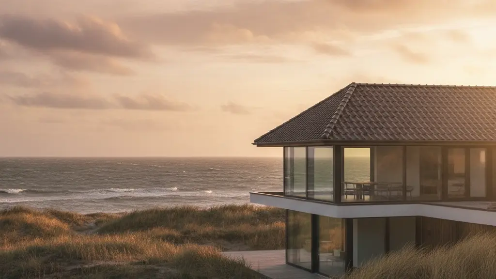

Ein sicheres Dach für Ihr Zuhause
Die Deichblick Dachdecker GmbH schützt Ihr Eigentum mit erstklassiger Handwerkskunst und absoluter Zuverlässigkeit vor Wind und Wetter an der Nordseeküste.

Ihr Dach in sicheren Händen
Ein Dach ist weit mehr als nur die obere Begrenzung Ihres Hauses. Es ist der verlässliche Schutzschild, der Ihre Familie, Ihr Eigentum und Ihre Lebensqualität vor den rauen Kräften der Natur bewahrt.
Gerade hier bei uns in Husum und an der gesamten Nordseeküste, wo der Wind oft kräftiger weht und das Wetter unberechenbar sein kann, ist ein fachgerecht gebautes Dach von unschätzbarem Wert.
Als Deichblick Dachdecker GmbH vereinen wir tief verwurzeltes Zimmerer- und Dachdeckerhandwerk mit moderner Technik und zeitgemäßen Materialien. Unser Anspruch ist es, Ihnen nicht nur ein optisch ansprechendes, sondern vor allem ein langlebiges und absolut sicheres Zuhause zu garantieren.

Echtes Handwerk
Wir pflegen die traditionellen Werte unseres Berufsstandes und setzen jedes Detail mit höchster handwerklicher Präzision um.
Absolute Zuverlässigkeit
Termintreue, saubere Baustellen und transparente Absprachen sind für uns keine Floskeln, sondern tägliche Praxis.
Sturmfeste Lösungen
Unsere Dächer und Holzkonstruktionen sind speziell für die hohen Windlasten und Witterungsverhältnisse der Küstenregion konzipiert.
Unsere Leistungen im Überblick
Von der kleinen Reparatur bis zum kompletten Neubau – wir bieten Ihnen das gesamte Spektrum des Dachdecker- und Zimmererhandwerks aus einer Hand.

Dachdeckung & Dachsanierung
Ob klassisches Steildach mit Tonziegeln oder modernes Flachdach mit langlebiger Abdichtung. Wir decken, dämmen und sanieren Ihr Dach nach den neuesten energetischen Standards.
Mehr zu Dachdeckungen →
Zimmererarbeiten & Holzbau
Holz ist unsere Leidenschaft. Wir errichten stabile Dachstühle, planen individuelle Carports und setzen anspruchsvolle Holzkonstruktionen im Außenbereich um.
Mehr zum Holzbau →Dachwartung & Sturmsicherung
Vorsorge schützt vor teuren Folgeschäden. Mit unseren regelmäßigen Wartungen und professionellen Dach-Checks erkennen wir Schwachstellen, bevor Wasser eindringen kann.
Mehr zur Wartung →Bauklempnerei & Entwässerung
Eine funktionierende Dachentwässerung schützt das gesamte Mauerwerk. Wir montieren Dachrinnen, Fallrohre und maßgefertigte Blechanschlüsse aus Zink, Kupfer oder Aluminium.
Mehr zur Bauklempnerei →Warum Deichblick Dachdecker GmbH?
Wir sind Ihr Partner in Husum, wenn es um Qualität, Sicherheit und ein faires Miteinander geht.
Meisterliche Qualität
Jedes Projekt wird von erfahrenen Fachkräften geleitet. Wir verwenden ausschließlich zertifizierte Materialien namhafter Hersteller, um die Langlebigkeit Ihres Daches zu garantieren.
Ehrliche & transparente Beratung
Wir verkaufen Ihnen nichts, was Sie nicht brauchen. Vor jedem Auftrag erhalten Sie ein detailliertes, verständliches Angebot ohne versteckte Kosten. Wir erklären Ihnen jeden Schritt verständlich.
Regionale Verbundenheit
Als Husumer Betrieb kennen wir die klimatischen Besonderheiten unserer Region genau. Wir wissen, worauf es ankommt, damit Ihr Dach auch dem nächsten schweren Nordseesturm mühelos standhält.
Saubere & sichere Baustellen
Arbeitssicherheit und Ordnung auf der Baustelle sind für uns selbstverständlich. Wir hinterlassen Ihr Grundstück jeden Tag aufgeräumt und entsorgen alte Materialien umweltgerecht.
In 4 einfachen Schritten zu Ihrem neuen Dach
So unkompliziert und transparent läuft die Zusammenarbeit mit uns ab.
Erstkontakt & Beratung
Sie rufen uns an oder schreiben uns eine E-Mail. In einem ersten Gespräch klären wir Ihre Wünsche und vereinbaren einen zeitnahen Termin für eine Besichtigung vor Ort.
Vor-Ort-Analyse & Angebot
Wir nehmen Ihr Dach genau unter die Lupe und besprechen die technischen Möglichkeiten. Anschließend erstellen wir ein transparentes, detailliertes Festpreisangebot für Sie.
Fachgerechte Umsetzung
Unser eingespieltes Team führt alle Arbeiten termingerecht, sauber und nach den geltenden Fachregeln des deutschen Dachdeckerhandwerks aus. Wir halten Sie stets auf dem Laufenden.
Abnahme & Nachbetreuung
Gemeinsam begehen wir das fertige Projekt. Erst wenn Sie vollkommen zufrieden sind, ist unsere Arbeit getan. Auch danach stehen wir Ihnen für Wartung und Service jederzeit zur Seite.
Sturmfeste Dächer für Husum und Nordfriesland
Das Klima an der Nordseeküste stellt besondere Anforderungen an Gebäudehüllen. Salzige Luft, heftige Regenschauer und langanhaltende Sturmwinde beanspruchen Ziegel, Abdichtungen und Dachstühle weitaus stärker als im Binnenland.
Wir haben uns darauf spezialisiert, Dächer so zu konstruieren und zu sanieren, dass sie diesen extremen Belastungen dauerhaft trotzen.
Mit speziellen Sturmklammern, hochwertigen Unterspannbahnen und einer fachgerechten Verankerung des Dachstuhls sorgen wir für maximale Stabilität. Vertrauen Sie auf unsere lokale Erfahrung – wir bauen Dächer, die Generationen überdauern und Ihnen in jeder Jahreszeit ein sicheres Gefühl der Geborgenheit schenken.
Sturmsicherungs-Checkliste:
- Mechanische Sturmklammern an jedem Ziegel
- Verstärkte First- und Gratbefestigung
- Hochreißfeste Unterspannbahnen
- Korrosionsbeständige Rinnen & Bleche
Einblicke in unsere Arbeit
Überzeugen Sie sich selbst von der Qualität unserer handwerklichen Umsetzung direkt vor Ort.
Planen Sie ein Projekt an Ihrem Dach?
Lassen Sie uns gemeinsam darüber sprechen. Wir beraten Sie unverbindlich, ehrlich und absolut kompetent.
Oder rufen Sie uns direkt an unter: +49 4321 55667